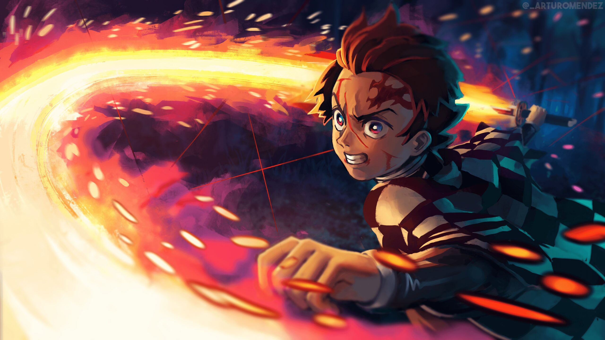

Tanjiro Kamado (竈門かまど 炭たん治じ郎ろう Kamado Tanjirō?) is the main protagonist of Demon Slayer: Kimetsu no Yaiba. He is a Demon Slayer in the Demon Slayer Corps, who joined to find a remedy to turn his sister, Nezuko Kamado, back into a human and to hunt down and kill demons in order to protect others from suffering the same fate as him. Before he became a Demon Slayer, his entire family was slaughtered by the Demon King, Muzan Kibutsuji, while his younger sister, Nezuko, was turned into a demon as a result.
Tanjiro is very kind by nature and has been described by others as having very gentle eyes and a compassionate persona. He exhibits a great deal of determination and will not give up once he has a goal to achieve; the best example of this being his relentless quest to find a cure for Nezuko. Even though he is relatively strong on his own, Tanjiro isn't opposed to asking others for help when he needs it. He is very protective of his friends and even more so of his younger sister.

Nezuko Kamado (竈門かまど 禰ね豆ず子こ Kamado Nezuko?) is the deuteragonist of Demon Slayer: Kimetsu no Yaiba. She is a demon and the younger sister of Tanjiro Kamado and one of the two remaining members of the Kamado family. Formerly a human, she was attacked and turned into a demon by Muzan Kibutsuji.

Zenitsu Agatsuma (我あが妻つま 善ぜん逸いつ Agatsuma Zen'itsu?) is one of the main protagonists of Demon Slayer: Kimetsu no Yaiba and along with Inosuke Hashibira, a travelling companion of Tanjiro Kamado and Nezuko Kamado. He is also a Demon Slayer in the Demon Slayer Corps.
Zenitsu is a young man with fair skin and downward-sloped, scared-looking eyes that fade from soft brown to gold. He has short, yellow hair of varying lengths, cutting off squarely at the ends where it fades to a darker orange color, that falls in front of his face in uneven bangs. Before he became a Demon Slayer, Zenitsu's hair was originally black, but it turned the color it is currently when he was struck by lightning during his training.

Kyojuro Rengoku (煉れん獄ごく 杏きょう寿じゅ郎ろう Rengoku Kyōjurō?) was a major supporting character of Demon Slayer: Kimetsu no Yaiba and a major character in the Mugen Train Arc. He was a Demon Slayer of the Demon Slayer Corps and the former Flame Hashira (炎えん柱ばしら En Bashira?).
Kyojuro was greatly enthusiastic in regard to his duties as a Hashira, and often came across as cheerfully eccentric. He was amiable, pure of heart and boasted extraordinary technique and swordsmanship stemming from strict practice and discipline. He was an honorable warrior who adhered to his code of morals and principles that was instilled into him by his mother at a young age—the most significant being his belief that those who were born strong have a duty to protect the weak.

Muzan Kibutsuji (鬼き舞ぶ辻つじ 無む惨ざん Kibutsuji Muzan?) is the main antagonist of Demon Slayer: Kimetsu no Yaiba. He is the Demon King, the first of his kind, as well as the progenitor of all other Demons in existence.
Muzan is cold-hearted, ruthless, intimidating, and exceptionally intelligent. He sees no value in any humans he has encountered and shows little value in his own subordinates. Rarely ever visually upset or happy, he appears completely monotone and detached on most occasions, even when he callously murders his own subordinates. The only times he ever shows emotion are when his vision of perfection is moving forward or when he has subordinates completely submit to his will.
Kanae Kocho (胡こ蝶ちょう カナエ Kochō Kanae?) was a Demon Slayer and the late Flower Hashira (花はな柱ばしら Hana Bashira?). She was slain several years prior to the present story. She is also the biological older sister of Shinobu Kocho and the adoptive older sister of Kanao Tsuyuri.
Inosuke is a young man of average height and pale complexion with an extremely toned and muscular build for his age, possessing large, defined muscles most notably over his stomach and arms. In sharp contrast to this, he has an incredibly pretty and feminine face,[3] with large, wide eyes that are framed by an array of long eyelashes, their irises a dark to soft pale green, thin eyebrows and what could be a small, well-mannered mouth. His thick, black hair reaches just past his shoulders, fading into blue at the tips and forming an unruly and uneven fringe that falls just above his eyes, puffing out before curving and thinning towards his forehead.
Sakonji Urokodaki (鱗うろこ滝だき 左さ近こん次じ Urokodaki Sakonji?) is a retired member of the Demon Slayer Corps, having held the position of the previous Water Hashira (水みず柱ばしら Mizu Bashira?). He is the main cultivator of the Water Breathing, having trained Giyu Tomioka, Tanjiro Kamado, Sabito and Makomo.[1][2]
Giyu is a tall young man of a muscular stature and pale complexion, who is almost always seen wearing an unimpressed or emotionless expression. He has unruly black hair of uneven lengths that sticks up in tufts around his head, which he wears tied back in a low messy ponytail at the base of his neck. His bangs fall over his eyes in an uneven fringe. His eyes are sharp and moderately large, their irises a deep sapphire that fades to a lighter blue and their pupils a bluish-black, and are framed by thin eyebrows.
Enmu took the form of an incredibly pale young man with ringed blue eyes that tilt sharply down towards the sides of his face, the left one of which with the kanji for "Lower Rank One" etched into its iris and a horizontal slit on his right instead of a pupil. He had three square-shaped markings on each of his cheeks, each separated by a smaller square, which fade from green to yellow in color, and straight, chin-length hair of a dark black color which he wore parted to his right, the right side tucked behind his ear. His hair fades into a red-orange color near the ends, but appears blue at the tips of the two longer, shoulder-length strands that curve upwards and outwards below the base of his neck, from under the rest of his hair.
Outraged by the appearance of a Demon Slayer wearing hanafuda-like earrings in Asakusa, Muzan Kibutsuji summons two of his followers to hunt him down.[1] Susamaru and Yahaba walk the streets of the busy city searching for a trail to their next target. Yahaba uses his Blood Demon Art to track the footsteps of a Demon Slayer carrying a large box. Susamaru walks alongside him, bouncing her temari ball as she follows along..
Genya Shinazugawa (不死しなず川がわ 玄げん弥や Shinazugawa Gen'ya?) is a major supporting character of Demon Slayer: Kimetsu no Yaiba. He is a Demon Slayer in the Demon Slayer Corps and also the younger brother of the Wind Hashira, Sanemi Shinazugawa.
Yushiro (愈ゆ史し郎ろう Yushirō?) is the traveling companion of Tamayo and a close ally of Tanjiro Kamado. He was turned into a Demon by Tamayo.
Tamayo (珠たま世よ Tamayo?) is a skilled doctor and close ally of Tanjiro Kamado. Muzan Kibutsuji turned her into a Demon.
Akaza (猗あ窩か座ざ Akaza?) is a major supporting antagonist of Demon Slayer: Kimetsu no Yaiba. He is a demon affiliated with the Twelve Kizuki, holding the position of Upper Rank Three (上じょう弦げんの参さん Jōgen no San?).